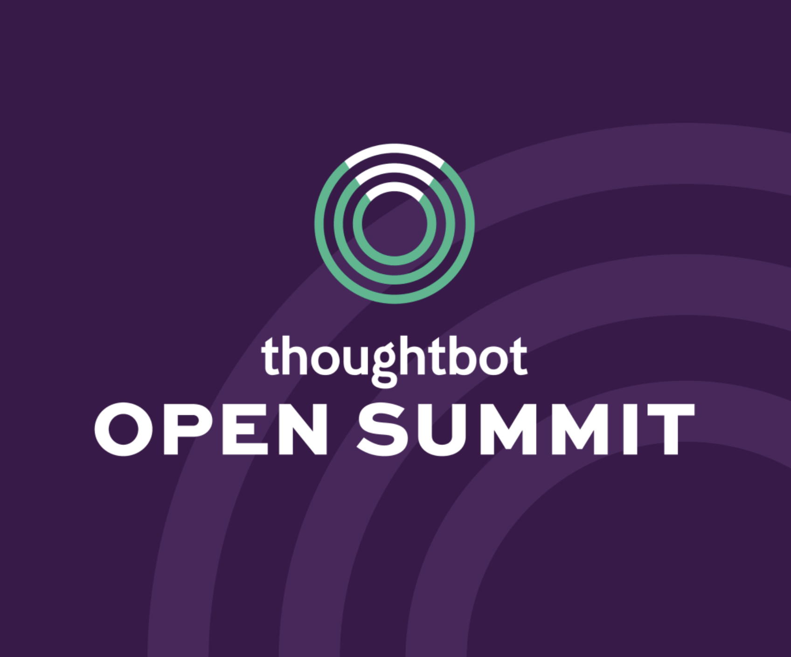

The hidden value of niche open-source projects
Hello everyone, and welcome to my talk about the hidden value of
niche open-source projects.
🗂️
/Users/rhannequin/code/ideas/
Let's start with a quick poll. Please raise your hand if you have
a folder on your computer called projects,
ideas or side...
Yes, as expected, many of us.
Now, keep your hand up if you've touched a project in that folder
in the last month.
Not so many hands up now, right?
I'm wasting my time,
This also might seem familiar. I made it appear as a quote
because this is exactly what I told myself a few months ago.
This is what I want to talk about today.
@rhannequin
Senior developer at
thoughtbot
🪐🍔🤖💻🍿
I'm Rémy, you can find me online almost anywhere under the handle
@rhannequin.
I work as a senior developer at thoughtbot, a consultancy that
helps companies build great products while leveraging their team.
We are a remote-only company and we operate from the EMEA region
and the Americas.
Don't hesitate to come and say Hi so that we can talk about
anything, knowing I can hardly resist talking about astronomy and
great food.
What are we going to talk about?
💡 Tale of side projects
🫠 Valley of despair
🌅 A new hope
💎 Unlocking the treasure
This talk is about the path many side projects take, the obstacles
we face, and how we can overcome them and find value in our
projects.
Genesis
🪐 + 💻
Let's start at the beginning.
I love astronomy and I have been trying to do some coding and apps
related to it for a while.
But when I started, only a few data was available online, often in
a format that was not easy to use.
This is for example a screenshot from the great website Heavens
Above, which provides a lot of data about the sky. The work done
by the author Chris Peat is amazing, but as you can see this is
HTML. If I wanted to access this data, I would have to scrape
the website, which is not very nice, and quite a pain to do.
Sharing is caring
I like the idea that astronomical data is universal and should be
available to everyone. So I started investigating how Chris Peat
was able to produce such precise data and if I could do it myself.
As the idea grew on me, I started thinking that it would be
great to have the code open source so that someone else could
do the same if they wanted.
This is how I started Astronoby.
Astronoby is an open source Ruby library that provides
astronomical data and events
mars = Astronoby::Mars.new(
instant: instant,
ephem: ephem
)
topocentric = mars.observed_by(observer)
horizontal = topocentric.horizontal
puts "Mars is #{horizontal.altitude.degrees}°
high in the sky"
It enables to compute the position of planets, times of when
they rise and set, Moon phases and much more.
Here for example, the exact altitude in degrees of Mars as seen
from an observer somewhere on Earth at a given time.
But know this,
It took me almost 2 years to release the first
minor version of Astronoby.
This is the first thing about side projects, it takes time, and
it's not the only thing makes them hard to achieve.
Who needs this?
Who needs this?
Who actually needs to compute Moon phases in Ruby? Basically,
nobody cares. I'm not saying this in a bitter way, it's just an
objective fact. It's already possible to do the same in Python for
years, with way better performance and features.
I'm not doing this right
Then we have the classical is the classical imposter syndrome. I
am not an astronomer or a scientist, how can I pretend to
calculate this data right? Who is going to trust me?
This is a real concern, it's hard to trust ourselves and find
legitimacy.
So much effort
This one sometimes hurts your feelings. Working hard on features,
improvements, code quality, and it remains unnoticed. You know how
much effort and love you put into it, but there is nobody to
witness it.
I wrote a blog post after the biggest refactoring of Astronoby,
which took me months, and enabled some of the most important
features brought to the library.
I barely got any feedback or reaction. I said it earlier, there is
a limited interest for this and it is often very different from
your own emotion attachment.
The hidden no value of niche open-source projects
At this point, you might be wondering that the value in these
projects is actually none.
It is natural to feel this way, I believe we all do at some point.
Now that I have destroyed all hopes and dreams, let's build them
back up.
Staying motivated
First, let's see how we can boost and keep the motivation.
Work with passion
Let's start easy even if we tend to forget it. Why did you start
working on this project in the first place? You actually like this
topic. It is exciting and you are having a good time.
We could actually stop here. I mean, if you are having a good
time, why would you stop?
You can take advantage of any interest you have to help you stay
motivated and excited.
But things get even more interesting when you start thinking about
everything this project brings you.
Personal mission and challenge
When I started my studies, I didn't know what I wanted to do. It
turns out programming was giving me the same thrill of solving
problems as my high school math exercises. This might be just me,
I know I'm weird. But the sense of challenge, and the will to
achieve my goal of providing astronomical data in Ruby, that got
me excited.
Set up achievable goals 🎯
🎉 Celebrate wins
Talk about it 💬
It can help to add a tiny bit of project management. Think of
small thresholds that you can achieve, and celebrate them.
You can also use the community to help you stay motivated as a
witness of your progress. When I wanted to lose weight, I told
others I started eating healthier. Through accountability I was
more likely to stick to it. Well, it didn't work, but it was worth
trying.
Look at what already worked
The community is full of examples of people who started niche
projects and made them successful.
For example, the Faker gem, started almost 20 years ago, initially
a very niche need, now a very popular gem with hundreds of
individual contributors, thousands of stars, used for testing,
seeding, development, fun and more.
SQLite started as a small library to provide a lightweight
database engine, and now it is even used by NASA on a Mars rover.
And Cowsay! It started as an Easter egg but you can find it in
many systems now even just to check system status.
Unlocking personal and professional growth
And now comes the most interesting part. The hidden value of niche
open-source projects is that it makes you grow.
Open-source best practices
First, you're going to learn a lot about open-source development.
Versioning
What is versioning, how do you deal with breaking changes?
These are things we don't always have the opportunity to work on
in our day-to-day job. Once you publish a library, the public
API is set in stone, and your own project becomes a dependency
for others. This completely changes the way you think about
your code and it is really exciting.
Documentation
Documentation is another opportunity that emerges from open-source
projects. Your niche interest is also the interest of others, you
want to help them understand your project, how to use it. You also
want to make yourself in the future a favour because it's easy to
get lost in your own code.
You will learn how to write a good README, how to structure your
documentation, discover what's important in a CHANGELOG, how to
document the evolution of your project.
Code quality
How to write maintainable code? How to make it readable? What
about performance?
I can't answer these questions now, but working on open-source
projects will give you some answers.
In the Ruby community, we have a strong appeal for code quality
and a big expertise about testing, so this is the opportunity to
build strong programming skills.
Community
You might be thinking "I have to learn all this??". Well, you
don't have to , it will come naturally as you work
on your project.
Open-source is not just about writing public code, even if there
is already a lot of value for the community. It is about sharing
knowledge, collaborating, and building a community around your
project.
An open-source library means people can use it, look into it,
contribute to it, have opinions, and build on top of it.
By making your project open-source, you are contributing to the
community and you become responsible for some that didn't exist
before.
This is also a great way to enter the world of open-source at your
own pace. You don't have to be a Rails contributor to be a Ruby
open-source developer.
New technical skills
With your code being public, you might want to make it better,
more efficient, more elegant. Either you are already a very
experienced developer and you are going to show-off your skills.
Or, you are going to learn on the way.
OOP
API design
Testing
DDD?
How can I apply object-oriented programming principles to my
algorithm? How can I design a nice API for the end-user? What's
the best way to test my code? What if I try to apply domain-driven
design principles to my code?
angle1 = Astronoby::Angle.as_radians(Math::PI)
angle2 = Astronoby::Angle.as_degrees(90)
angle1.to_degrees.value == angle2.value
These were questions I asked myself working on Astronoby and I
would like to show you how your project can help you learn new
concepts.
This code comes from Astronoby, the first working version. To deal
with angles, I had dedicated classes that were responsible for
converting themselves from one unit to another.
Yyou had to convert angles to the same unit before comparing the
attribute value. It works but it's not very elegant.
angle1 = Astronoby::Angle.from_radians(Math::PI)
angle2 = Astronoby::Angle.from_degrees(90)
angle1 == angle2
Then, I introduced value objects, a design pattern that
encapsulates a value and its unit, so that you can compare
angles regardless of their unit.
Now I can use the equality operator to compare two angles without
worrying about how they were initialised.
time = Astronoby::Epoch.to_utc(sun.epoch)
sun
.ecliptic_coordinates
.to_equatorial(sun.epoch)
.to_horizontal(
time: time,
latitude: latitude,
longitude: longitude
)
.altitude
.to_degrees
.value
Here's another example, but this time to illustrate domain-driven
design principles.
The first way to get the altitude in degrees of the Sun was long
with many conversions. I can let you read the code but I bet it
won't help you understand what's going on.
It requires quite some knowledge already to get to the right
information.
Then, I focused on making a nice API for the end-user, oriented
towards the domain. The developer doesn't have to deal with
conversions, they just have to call the methods that make sense
in the context of the problem they are trying to solve.
I guess horizontal still needs some explaining, it a
kind of coordinates up-and-down, left-and-right. But overall, the
API is a tool to express the domain and give you answers instead
of forcing you do some manipulations.
What Astronoby taught me
Value objects
Domain-driven design
Timescales
Numeric types
Matrix
Your project is an awesome opportunity to try and learn new
things, what interests you and when you decide to work on it.
Among other things, Astronoby taught me about value objects as I
just presented, and domain-driven design.
I also learnt on the way about how to deal with different
and time zones, how to deal with time in Ruby.
Precision being important, I learnt more about numeric types and
how to deal with precision issues.
These a just examples of things I didn't plan to learn but got in
the way. This is learning through serendipity.
New relations
New clients
New job opportunities
Another great thing about side projects is that they create
opportunities.
It doesn't matter if it's niche, you actually have a lot to say
and you're one of the few people who can say it.
While working on your project, there are opportunities to share
your ideas and your progress. You are going to have many blog post
ideas. Why not talk about them in a podcast? Maybe do a meetup
presentations. Each of these happened to me thanks to open source
work.
Learning in public
One thing I strongly recommend is to learn in public. We are lucky
to work in an industry where a lot of knowledge is shared
publicly, and we can learn from each other.
Being part of this initiative is really rewarding.
Toots, blogs, podcasts, meetups
Learning in public is about sharing what you learn, structuring
your thoughts, and getting feedback from others.
It is a great way to share where your interests are, it can
inspire others, and it favours feedback and collaboration.
You can start with small things, like a toot on Mastodon about
something you just learnt. Yes, it's very unlikely you are the
first person to learn this, but it doesn't matter. If you just
learnt it, then you have already a bit more experience to share
with the rest of the world.
Write a blog post about a feature you developed or a problem you
solved. You can also do a podcast episode and just talk about
anything that got you excited recently.
I know I have a lot of progress to make about writing in Ebglish,
and as you can hear with my English accent too, but practice
helps!
Meetups are always looking for speakers and topics of all levels,
with original content or about frequent core topics.
Who knows, maybe you can try to submit a talk to a conference, get
lucky and then be absolutely terrified about being on stage.
This is going to make you meet people, expand your visibility and
create new opportunities.
Last year, someone contacted me on a social network about
Astronoby, as they wanted to use it in their project. I didn't get
to work with them specifically on Astronoby but I ended up as a
consultant for thoughtbot on their project.
This can be an idea to sell open source development time at your
company: it might bring new client opportunities. 🫰
One more point, you don't have to take yourself seriously. If this
is niche and you feel like you are all alone doing your thing, it
also means that you can take your time, try things and make
mistakes. Nobody is expecting anything from you, so you can focus
on what you want, either it's the code, the features, the sharing,
the community, the fun, or all of it.
And if you don't do side projects, that is very fine too. I know
this talk is very much oriented towards side projects, but here
are many other occasions where perseverance and passion are
welcome.
I'm wasting my time,
You are having fun
So, you are not wasting your time. You are having fun, you are
learning, you are growing. You don't need appreciation to have a
good time.
Who needs this?
You are not alone
You are the Ruby community
Who needs it? You do!
As we sometimes say, if it's useless, then it's indispensable. The
fact that you are doing it means that there is at least one person
who needs it. And you will be surprised to see how many people are
actually sharing your interest.
Maybe we do need to be able to compute astronomical data in Ruby.
Ruby is such a great language, so expressive, so elegant, but yet
it is not used much in the scientific community. That can change
now. We are all part of the Ruby community.
It turns out there is a weather application that very much needs
astronomical data. And today, Astronoby is used in production by
Hello Weather.
I'm not doing this right
You are doing it your way, an original way
I agree getting rid of the imposter syndrome is hard. We often
want to do things right and we are afraid of making mistakes. But
there are many definitions of "right". By doing it your way, you
are bringing your own style, your own vision. This might become
the new "right" way.
So much effort
Your efforts are paying in many unsuspected ways
Finally, my favourite one is asking yourself if it's worth it. You
are learning, you are growing, you are meeting people, you are
having fun. So, yes, this is very much worth it.
Conclusion
I hope I didn't turn this talk into some kind of life-style
program. All I wanted is to share my experience.
There are many obstacles
If you love it, do it
There's so much to take on the way
It's true it's not always easy. You're going to face moments of
doubt, you might want to give up and you might feel like it is
not worth it.
But if you love it, if you are learning, then do it. You will be
surprised by how much you can learn and how much you can grow.
One day you might receive a GitHub issue with bad news and you
will be incredibly happy just to have someone using your project.
So weird how someone finding performance issue in your code can
make your day.
Where do you start?
Open-source one project
Add a README and a gemspec
Share it
Ask for feedback
Ping me
Remember the folder I asked you about at the beginning? Take one
of your projects, the one you love the most.
Put it on GitHub publicly, add a README, share it with your
friends and ask for one piece of feedback. And here it begins.
Please don't hesitate to ping me, I would love to see a new gem
emerge for the community.
This might be the beginning of a great adventure. And if it's not,
at least you will have shared something you love with the world.
Ask on socials
Don't hesitate to use social medias to ask for help and feedback,
I believe we are a friendly and open community.
You can also use initiatives like First Ruby Friend to find a
mentor to help you get started. I think the program is closed for
2025 but will return next year.

And if you are very excited about open source, thoughtbot is
organising a new online Open Summit on October 31st, with many
workshops and talks about the open source made with thoughtbot and
with the community.
To conclude, I invite you to let your passions guide you. Niche
open source projects are the best, they will make you grow and
be excited about work, which is not something to take for granted.
Worst case scenario, you will have a new folder called
projects with a bit more experience and a bit
more confidence.
Thank you
@rhannequin